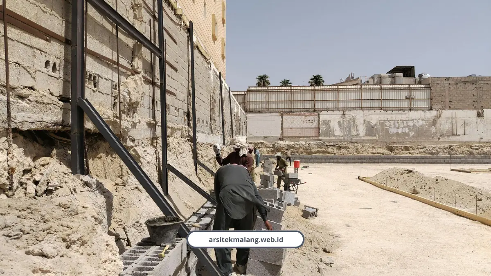
Retaining Wall Rumah, Kunci Aman Bangun di Lereng Batu
Kenapa retaining wall rumah wajib di lahan lereng Batu Malang. Data SNI, faktor keamanan, dan jenis dinding penahan tanah yang tepat.
Baca SelengkapnyaRetaining Wall Rumah, Kunci Aman Bangun di Lereng Batu
Kenapa retaining wall rumah wajib di lahan lereng Batu Malang. Data SNI, faktor keamanan, dan jenis dinding penahan tanah yang tepat.
Baca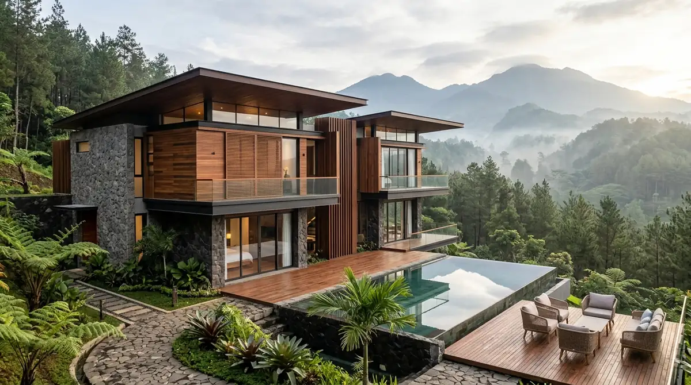
Material Kayu Fasad untuk Villa Batu Modern Tropis Tahan Cuaca
Simak pilihan material kayu fasad tahan cuaca ekstrem yang cocok untuk villa Batu modern tropis, dari jenis kayu hingga perawatannya.
Baca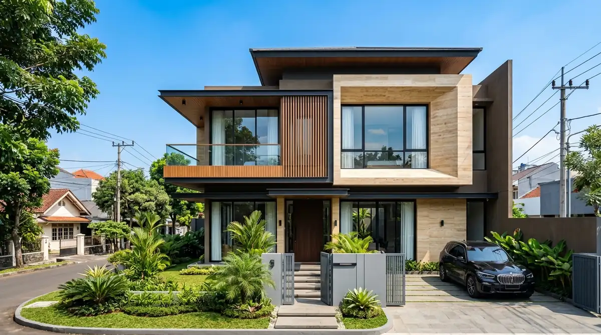
Estimasi Biaya Bangun Rumah per m2 di Klojen Malang 2026
Cek rincian estimasi biaya bangun rumah per m2 di Klojen Malang tahun 2026, lengkap dengan peran arsitek rumah mewah dalam mengendalikan anggaran.
Baca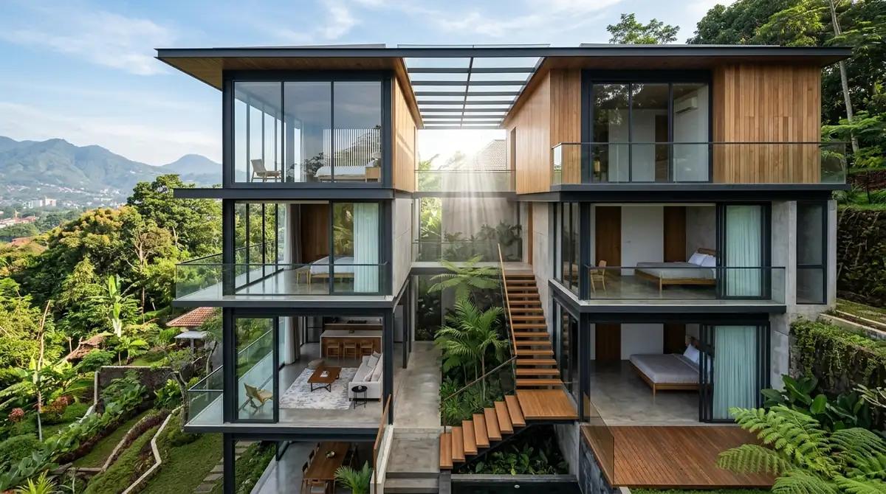
Bukaan Cahaya Alami untuk Desain Rumah Tanah Miring Malang
Simak strategi bukaan cahaya alami yang efektif untuk desain rumah tanah miring Malang, agar interior tetap terang meski mengikuti kontur lahan.
Baca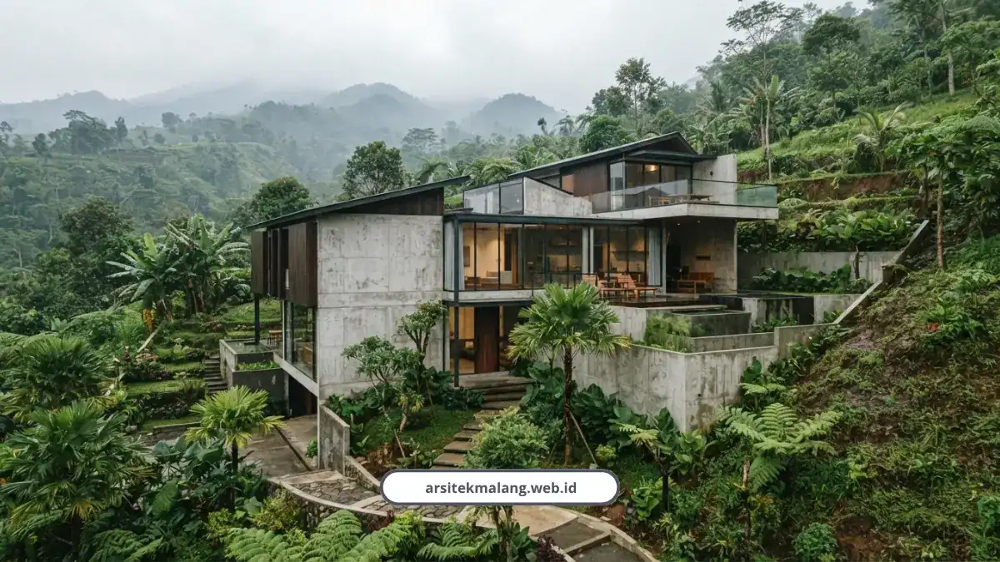
Desain Rumah Lahan Miring Malang, Kontur Jadi Berkah
Solusi desain rumah lahan miring di Malang tanpa bongkar bukit. Hemat galian 40%, sejuk alami, aman longsor. Konsultasi gratis sekarang.
Baca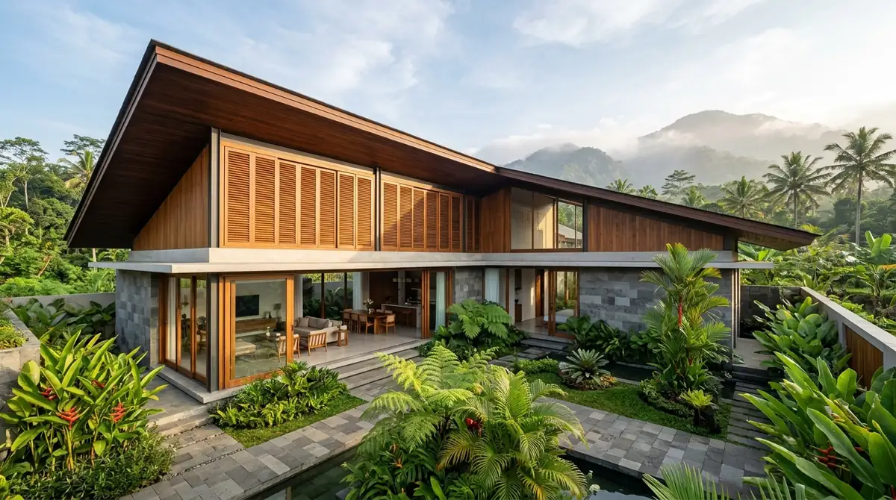
Mengenal Filosofi Arsitektur Malang untuk Iklim Tropis
Kenali filosofi arsitektur Malang yang mengutamakan kenyamanan iklim tropis melalui ventilasi alami, orientasi bangunan, dan material lokal.
Baca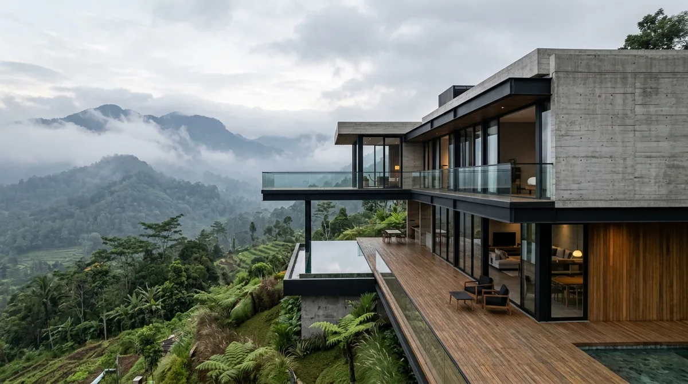
Apa yang Dipelajari Arsitek Villa Batu dari Portofolio Araya
Simak apa yang bisa dipelajari arsitek villa Batu dari portofolio rumah industrial di Araya untuk memperkaya pendekatan desain villa modern.
Baca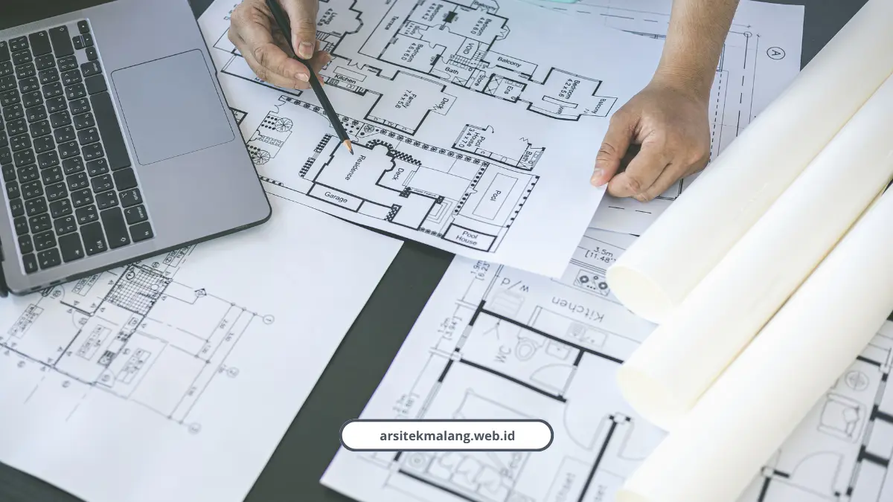
Estimasi Biaya Desain dan Bangun Rumah 2 Lantai di Malang 2026
Biaya rumah 2 lantai di Malang 2026 mulai Rp3,5 juta per m2. Simak rincian RAB, harga material, dan biaya PBG lengkap dari tim ahli kami.
Baca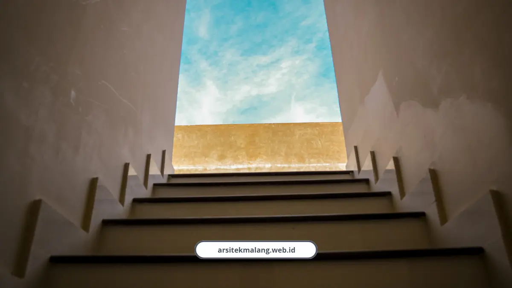
Desain Void untuk Pencahayaan Alami pada Rumah 2 Lantai Malang
Desain void rumah bikin rumah 2 lantai di Malang terang dan adem alami tanpa boros listrik. Simak data lux, biaya, dan solusi masalahnya.
Baca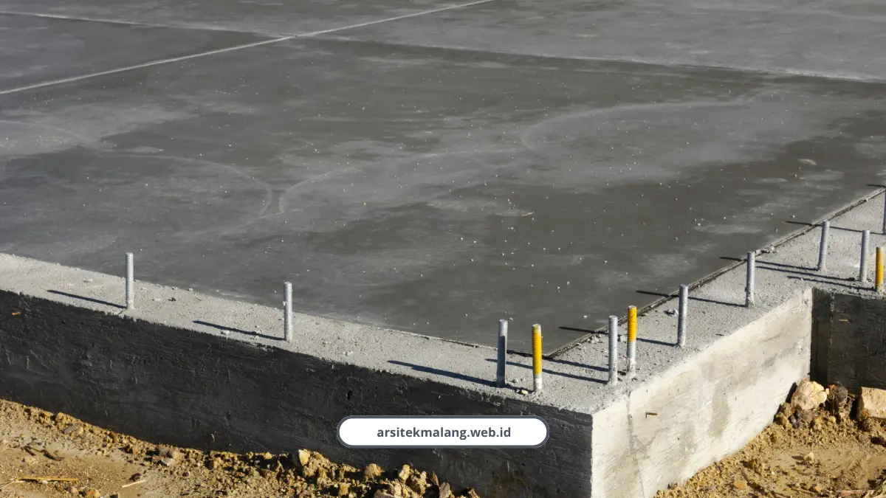
Solusi Struktur Kokoh Rumah 2 Lantai untuk Lahan Lereng Malang Raya
Panduan struktur rumah 2 lantai tahan gempa untuk lahan miring Malang Raya. Pondasi, retaining wall, dan biaya lengkap dari tim ahli.
Baca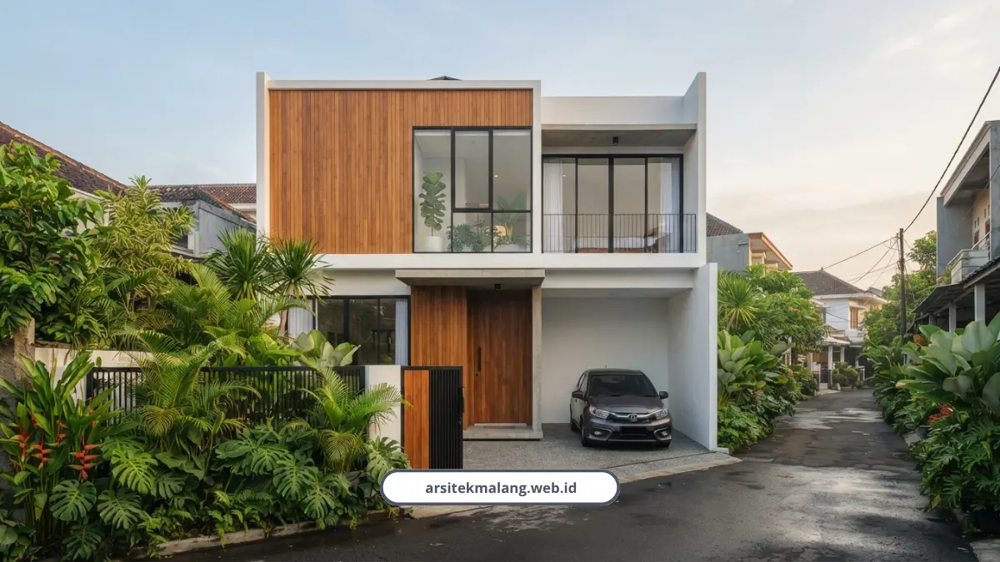
Jasa Arsitek Rumah 2 Lantai Malang: Desain Mewah dan Efisien Ruang
Bangun rumah 2 lantai di Malang tanpa boncos. RAB presisi, legalitas PBG aman, desain mewah hemat lahan. Konsultasi gratis sekarang.
Baca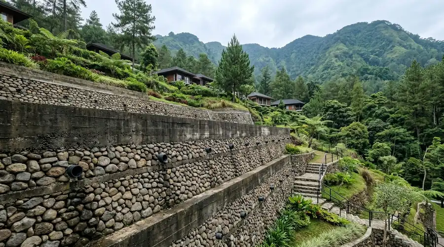
Berapa Biaya Retaining Wall untuk Lahan Kontur di Batu?
Cek estimasi biaya retaining wall untuk lahan kontur di Batu Malang, mulai dari faktor yang memengaruhi harga hingga tips menghemat anggaran.
Baca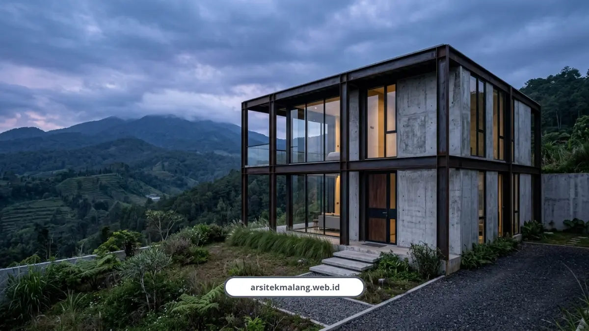
10 Inspirasi Fasad Rumah Minimalis Malang
10 inspirasi fasad rumah minimalis modern tahan iklim Malang, dari aksen kayu, industrial, sampai renovasi fasad rumah lama.
Baca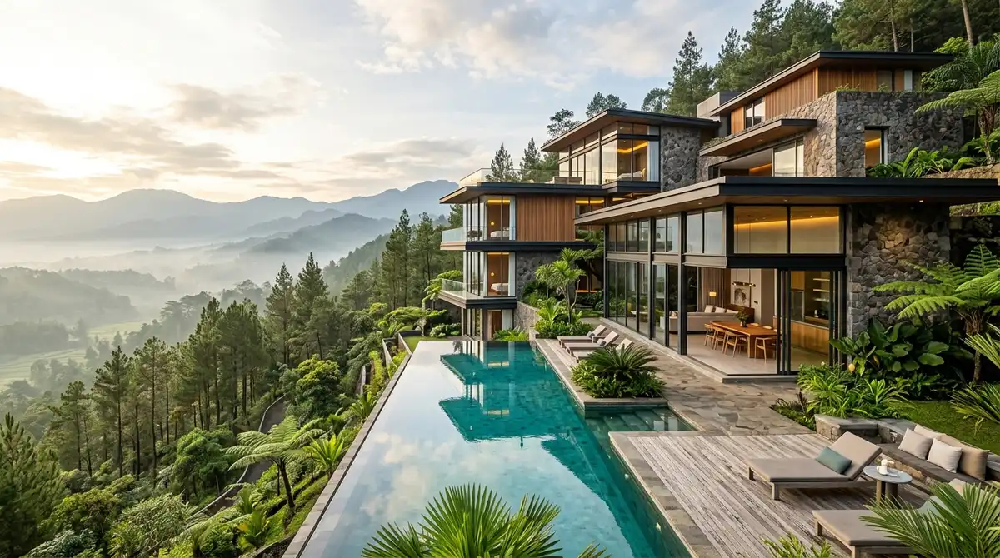
Peran Arsitek Villa Malang Merancang Hunian Kontur Sengkaling
Simak peran arsitek villa Malang dalam merancang hunian kontur bertingkat di Sengkaling, dari analisis lahan hingga penyelesaian desain akhir.
Baca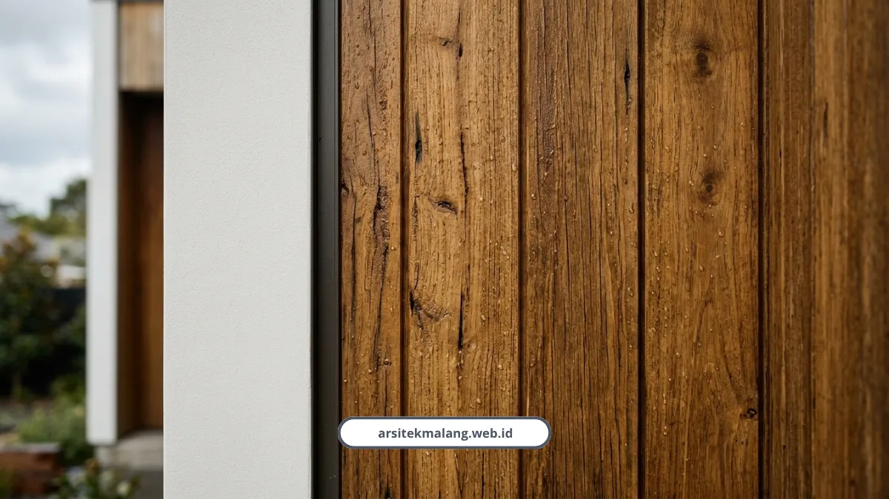
Material Eksterior Rumah Tahan Cuaca Malang
Rekomendasi material eksterior rumah tahan cuaca lembap Malang, dari kayu solid, WPC, sampai cat anti jamur pilihan tim kami.
Baca
Denah Rumah Minimalis 6x12: Contoh Karya Kami
Lihat contoh denah rumah minimalis 6x12 meter rancangan kami, lengkap siasat sirkulasi udara dan estimasi biaya bangun di Malang.
Baca
Desain Rumah Minimalis Malang: Akali Lahan Sempit
Bingung desain rumah minimalis Malang buat lahan sempit? Kami rancang tata ruang lapang, RAB transparan, dan legal PBG. Konsultasi gratis.
Baca
Portofolio Arsitek Malang: Desain Rumah Tropis Modern
Lihat langsung portofolio arsitek Malang kami, dari rumah adem tanpa AC sampai kafe kekinian. 150+ proyek, konsultasi desain gratis sekarang.
Baca
Konsultasi Arsitek Malang: 5 Tahapan Desain Rumah
Ketahui 5 tahapan konsultasi arsitek profesional di Malang mulai dari konsep ruang, render 3D 4K, gambar kerja DED, hingga izin PBG via SIMBG.
Baca
Jasa Arsitek Malang Terpercaya, Garansi Struktur 2026
Solusi desain arsitektur modern tropis di Malang Raya dengan 150+ proyek selesai, RAB transparan tanpa biaya tersembunyi, dan garansi struktur 100%.
Baca
Kontrak Arsitek Malang: Termin Bayar & Jaminan Revisi
Pahami 8 komponen vital kontrak kerja arsitek, skema termin pembayaran wajar standar IAI, dan batas jaminan revisi desain sebelum tanda tangan.
Baca
Legalitas Bangunan Malang: Apa yang Terjadi Jika Konstruksi Berjalan Tanpa PBG?
Pahami sanksi administratif, penyegelan proyek, denda daerah, dan cara pemulihan izin bangunan yang bermasalah.
Baca
Kenapa Biaya Renovasi Rumah Malang Bisa Lebih Hemat dengan Arsitek Bersertifikat IAI
Ketahui rahasia efisiensi RAB renovasi, pencegahan bongkar pasang, dan pemilihan material lokal berkualitas bersama arsitek IAI.
Baca
Memahami Kontur Tanah Malang: Kenapa Lahan Miring di Dau Butuh Pendekatan Desain Khusus
Kenali karakteristik topografi lereng Dau, solusi arsitektur split level, dan konstruksi retaining wall yang aman dan berpanorama indah.
Baca
Cara Menghitung RAB dengan Jasa Desain Rumah Malang agar Anggaran Tidak Meleset
Panduan menyusun RAB terukur bersama jasa arsitek, rincian komponen yang sering terlewat, dan strategi mengendalikan anggaran konstruksi.
Baca
Peran Kontraktor Rumah Malang dalam Memilih Semen dan Bata Lokal Berkualitas
Ketahui standar seleksi semen dan bata lokal Jawa Timur untuk menghasilkan dinding kokoh, tahan cuaca dingin, dan efisien biaya.
Baca
Peran Konsultan Bangunan Malang dalam Mempercepat Proses PBG via SIMBG
Langkah teknis percepatan verifikasi SIMBG oleh konsultan arsitek berlisensi STRA IAI guna menghindari revisi berkas berulang.
Baca
Material Kayu Fasad untuk Rumah Minimalis Malang yang Tahan Cuaca Ekstrem
Pilihan material kayu bengkirai dan merbau yang tahan cuaca ekstrem, teknik pemasangan minimalis, dan tips perawatannya.
Baca
Berapa Biaya Jasa Arsitek untuk Desain Bukaan Cahaya Alami Rumah Minimalis di Batu?
Ketahui estimasi tarif jasa arsitek, rincian teknis skylight atap bebas bocor, dan manfaat efisiensi energi di Kota Batu.
Baca
Rincian Lengkap Estimasi Biaya Bangun Rumah per m2 di Kedungkandang Malang 2026
Rincian biaya bangun per m² di Kedungkandang tahun 2026, keuntungan lahan datar, dan strategi menyusun RAB efisien.
Baca
Kenapa Memilih Jasa Arsitek Malang yang Menerapkan Filosofi Tropis Modern Minimalis
Pentingnya filosofi tropis modern minimalis untuk kenyamanan termal, efisiensi perawatan, dan nilai jangka panjang hunian Anda di Malang.
Baca
Belajar dari Portofolio Rumah Industrial Araya: Insight untuk Arsitek Rumah Minimalis Malang
Pelajaran kejujuran material beton ekspos, tata ruang terbuka, dan kehangatan tekstur alami dari hunian modern industrial Araya.
Baca
Desain Rumah Tropis Modern di Sukun Malang: Solusi Sejuk Tanpa AC
Solusi ventilasi silang, void alami cerobong udara, dan estimasi biaya jasa arsitek hemat energi di kawasan Sukun Malang.
Baca
Retaining Wall untuk Renovasi Rumah Lama di Lahan Kontur Batu: Kapan Diperlukan Arsitek Renovasi?
Simak kapan retaining wall diperlukan saat merenovasi rumah lama di lahan kontur Batu, dan peran arsitek renovasi rumah Malang di dalamnya.
Baca
Proses Kerja Jasa Arsitek Malang dalam Merancang Villa Kontur di Sengkaling
Alur kerja sistematis jasa arsitek Malang untuk villa kontur di Sengkaling, dari konsultasi, analisis topografi lereng, hingga gambar kerja DED.
Baca
Pelajaran Desain Minimalis dari Studi Kasus Renovasi Rumah Kolonial di Kawasan Ijen Malang
Harmoni proporsi, kesederhanaan bentuk, dan efisiensi bukaan alami arsitektur kolonial Ijen untuk diterapkan pada desain rumah minimalis modern.
Baca
Menghitung RAB Bangun Rumah di Lahan Miring Malang: Apa Saja yang Beda?
Perbedaan menghitung RAB rumah lahan miring dibanding lahan datar, dari biaya cut and fill hingga retaining wall penahan lereng.
Baca
Pilihan Material Semen dan Bata untuk Fasad Rumah Mewah Malang
Rekomendasi kombinasi bata ekspos premium dan semen finishing tekstur elegan yang tahan kelembapan cuaca ekstrem Malang.
Baca
Apakah Renovasi Rumah di Malang Wajib Mengurus Persetujuan Bangunan Gedung (PBG)?
Cari tahu batasan renovasi ringan vs renovasi struktural yang wajib memiliki PBG via portal SIMBG dinas perizinan.
Baca
Tips Memilih Material Kayu Fasad Rumah Tropis Tahan Cuaca Ekstrem Malang
Rekomendasi kayu ulin, merbau, dan komposit untuk fasad rumah tropis tahan kelembapan dan cuaca ekstrem di Malang.
Baca
Inspirasi Bukaan Cahaya Alami untuk Rumah Minimalis Sejuk di Kota Batu
Solusi skylight, void vertikal, dan jendela panel besar hemat energi untuk menjaga rumah tetap terang dan hangat di Batu.
Baca
Rincian Lengkap Estimasi Biaya Bangun Rumah per m2 di Pakis Malang 2026
Panduan biaya bangun rumah per m2 kelas standar hingga mewah di Pakis Malang beserta tips efisiensi anggaran RAB.
Baca
Filosofi Desain Maroon Arsitek: Memadukan Estetika Tropis dan Modern Minimalis
Perpaduan fungsi adaptasi iklim tropis Malang dan estetika minimalis modern untuk hunian sejuk dan bernilai tinggi.
Baca
Review Portfolio Rumah Mewah Bergaya Minimalis Industrial di Araya Malang
Eksplorasi fasad beton ekspos, aksen metal hitam, dan konsep tata ruang open plan di kawasan elit Araya Malang.
Baca
Desain Rumah Tropis Modern di Karangploso Malang: Solusi Sejuk Tanpa AC
Penerapan strategi ventilasi silang, void plafon tinggi, dan desain lahan miring untuk hunian sejuk alami hemat energi.
Baca
Panduan Desain Rumah Split Level Minimalis di Lahan Sempit Lowokwaru Malang
Konsep split level memaksimalkan fungsi ruang vertikal pada lahan terbatas di Lowokwaru Malang dengan pencahayaan alami optimal.
Baca
Teknik Konstruksi Retaining Wall Terbaik di Batu Malang
Pelajari teknik konstruksi retaining wall terbaik untuk lahan berkontur di Batu Malang, termasuk kaitannya dengan dokumen PBG.
Baca
Desain Villa Mewah Kontur Bertingkat di Sengkaling Malang Raya
Arsitek Malang bersertifikat IAI merancang villa mewah kontur bertingkat di Sengkaling dengan menyelaraskan tata ruang & pemandangan.
Baca
Studi Kasus: Renovasi Rumah Kolonial Klasik di Kawasan Cagar Budaya Ijen Malang
Renovasi rumah kolonial di Ijen membutuhkan pendekatan preservasi fasad asli sambil memperbarui fungsi interior modern.
Baca
Sanksi Hukum Membangun Tanpa PBG di Malang Raya: Yang Wajib Pemilik Rumah Tahu
Membangun tanpa PBG di Malang Raya berisiko sanksi administratif hingga penghentian konstruksi dan penambahan biaya tak terduga.
Baca
Kenapa Jasa Arsitek Malang Bersertifikat IAI Sangat Penting untuk Legalitas
Jasa pengurusan PBG Malang lebih lancar bila menggunakan arsitek bersertifikat IAI karena dokumen teknis sesuai standar verifikasi SIMBG.
Baca
Solusi Desain Rumah Lahan Miring Berbukit di Dau Kabupaten Malang
Arsitek Malang bersertifikat IAI merancang rumah lahan miring di Dau dengan pendekatan split level dan retaining wall presisi.
Baca
Cara Menyusun RAB Jasa Arsitek Malang Agar Terhindar dari Budget Overrun
Menyusun RAB jasa arsitek Malang yang akurat membutuhkan rincian biaya desain, pengawasan, dan kontinjensi sejak awal proyek.
Baca
Komparasi Harga Semen dan Bata Lokal Jawa Timur untuk Konstruksi Hemat
Biaya bangun rumah per m2 di Malang 2026 sangat dipengaruhi pilihan semen dan bata lokal Jawa Timur.
Baca
Panduan Mengurus Persetujuan Bangunan Gedung (PBG) di Pemkot Malang via SIMBG
Mengurus PBG di Pemkot Malang dilakukan melalui portal SIMBG dengan mengunggah dokumen teknis bangunan.
Baca
Katalog Desain Rumah Minimalis Modern karya Arsitek Malang Terkenal
Katalog desain rumah minimalis 1 lantai & 2 lantai dengan tata ruang open space efisien dan kombinasi material premium.
Baca
Spesifikasi Paket Jasa Desain Bangunan Arsitek Malang Terkenal
Spesifikasi paket desain konseptual 3D, gambar kerja DED, penyusunan RAB presisi, dan berkas teknis pendukung PBG.
Baca
Rekomendasi Jasa Arsitek Malang Terkenal untuk Bangun Rumah Mewah & Komersial
Layanan desain profesional arsitek Malang untuk hunian mewah dan ruang komersial, transparansi RAB, dan nilai investasi jangka panjang.
Baca
Jasa Desain Bangunan Komersial dan Cafe dari Arsitek Malang
Desain cafe kekinian, ruko, dan kantor modern dengan efisiensi ruang bisnis, daya tarik pengunjung, & RAB presisi.
Baca
Produk Desain Rumah Minimalis Mewah Karya Arsitek Malang
Cetak biru hunian efisien lahan terbatas, render 3D realistis, dan berkas IMB/PBG resmi karya Arsitek Malang.
Baca
Arsitek Terbaik di Malang: Layanan Desain dan Bangun
Layanan desain dan bangun terpadu, mulai dari gambar kerja, render 3D, hingga RAB, untuk kebutuhan hunian maupun komersial.
Baca
Tips Renovasi Hemat Tanpa Mengorbankan Kualitas
Strategi cerdas mengelola anggaran renovasi rumah dengan pemilihan material terbaik di harga yang bersahabat.
Baca
Pentingnya Menggunakan Jasa Arsitek Profesional
Investasi pada desain ahli tidak hanya memastikan kekuatan struktural tetapi juga menghemat biaya jangka panjang.
Baca
Panduan Material Ramah Lingkungan untuk Konstruksi
Menjelajahi opsi material bangunan yang berkelanjutan dan dampaknya terhadap efisiensi energi serta estetika bangunan modern.
Baca
Panduan Desain Rumah Tropis Modern Tahan Cuaca Dingin & Hujan Malang
Tips merancang hunian tropis modern yang nyaman, minim kelembapan, dan bebas bocor di iklim Malang.
Baca
Cara Menghitung RAB Bangun Rumah Type 36 & 45 di Malang
Simulasi perhitungan RAB komprehensif dari struktur hingga finishing untuk rumah minimalis di Malang Raya.
Baca
Panduan Mengurus PBG & IMB di Malang
Langkah hukum resmi mengurus izin PBG di Pemkot & Pemkab Malang tanpa kendala birokrasi.
Baca
Rahasia Pondasi Rumah Tahan Gempa di Perbukitan Malang & Batu
Solusi teknik sipil pondasi cakar ayam & bored pile untuk kontur tanah miring agar struktur aman.
Baca
Jasa Desain Villa Kontemporer: Integrasi Lanskap dan Material Alami
Penggabungan bentuk bangunan modern dengan material alami dan integrasi lanskap miring untuk villa di dataran tinggi Malang Raya.
BacaArtikel Populer
Cara Menyusun RAB Jasa Arsitek Malang Anti Overrun
27 Agt 2026
Komparasi Harga Semen dan Bata Lokal Jatim
27 Agt 2026
Panduan Mengurus PBG via SIMBG Pemkot Malang
27 Agt 2026